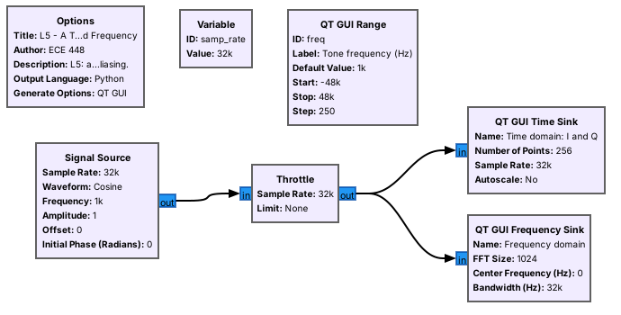
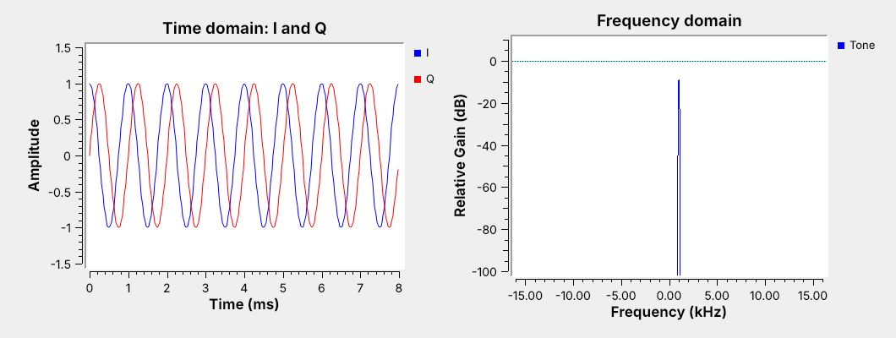
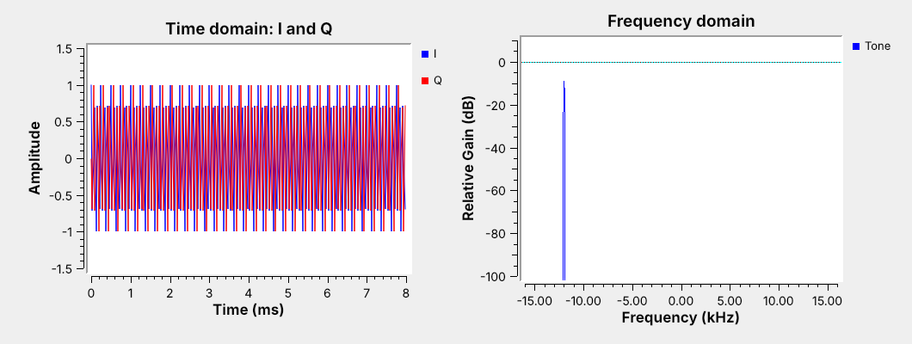
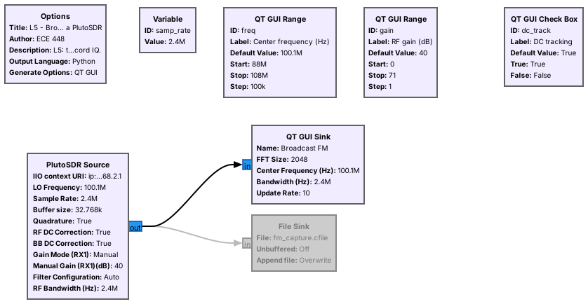
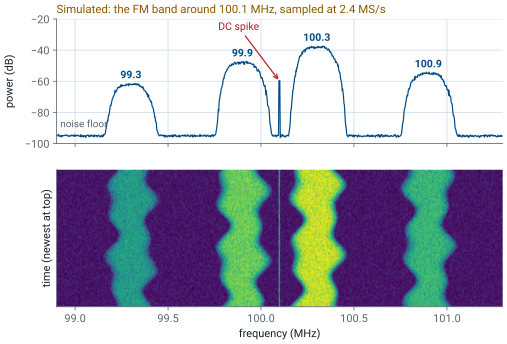

L5 - GNU Radio Introduction#
GNU Radio Introduction
Everything after the analog-to-digital converter is software, and in this course that software is a GNU Radio flowgraph.
Lesson 5 · Module 2: SDR & GNU Radio Foundations · Dr. Neil Rogers
Slides
Learning Objectives
- I can install GNU Radio and use GNU Radio Companion (GRC) to build, inspect, and run a basic flowgraph.
- I can capture a real RF signal using an SDR and interpret its time- and frequency-domain representations.
The Radio Is a Flowgraph

A flowgraph is blocks wired together: sources, processing, and sinks.
GNU Radio Companion (GRC) draws it and generates the Python that runs it.
Lesson 4 followed a signal from the antenna through the SDR’s front end to the analog-to-digital converter. Everything after that point is software, and in this course the software is GNU Radio. A GNU Radio program is a flowgraph: samples come out of a source, such as an SDR or a signal generator, pass through processing blocks, and end in a sink, such as a plot, a speaker, or a file. GNU Radio Companion (GRC) is the graphical editor we use to draw flowgraphs. When we press run, GRC writes a Python program from the diagram and runs it.
The figure is the first flowgraph of this lesson, opened in GRC: a signal source that makes a tone, a throttle that sets its pace, and two plots that show it in time and in frequency. Every flowgraph in the course, up to the ADS-B and AIS decoders of Module 6, is built from the same pieces.
Part 1: Install With Radioconda
Radioconda installs GNU Radio 3.10 and the PlutoSDR’s drivers in one step.
It runs on Windows, macOS, and Linux.
Install it before the lab; the pre-lab checks it.
The course standard is radioconda, a packaged installer built on the conda package manager that the GNU Radio project recommends for Windows and macOS. One installer brings GNU Radio 3.10, GNU Radio Companion, and the PlutoSDR’s libraries (libiio and libad9361) and GNU Radio blocks, along with drivers for many other radios and SoapySDR, which lets one GNU Radio block talk to many kinds of hardware. Download the installer for your operating system from the radioconda releases page and accept the defaults.
On Windows, the PlutoSDR also needs Analog Devices’ USB driver installed once, from the PlutoSDR Windows driver page; without it the Pluto appears only as a USB drive. The next frame lists the commands that confirm each piece works.
Verify the Install
Open the radioconda prompt (on Windows, “Radioconda Prompt” in the Start menu; on macOS and Linux, a terminal) and run each command. Each line names what a working result looks like.
Command |
Checks |
A working result |
|---|---|---|
|
GRC itself |
the GRC window opens |
|
the PlutoSDR on USB |
Windows and Linux: an entry for your radio with a |
|
extended-frequency mode |
|
A Pluto that reports [325000000 1 3800000000] on the iio_attr line is still in its stock 325 MHz to 3.8 GHz mode; bring it to EI, where it takes a minute to switch. A command that reports no device usually means a USB driver problem or a cable that carries power but not data.
Part 2: Your First Flowgraph
File, New: an Options block and a
samp_ratevariable.Add a Signal Source, Throttle, and QT GUI Time Sink; wire and run.
Throttle paces a flowgraph with no hardware.
This follows the wiki’s “Your First Flowgraph.” Every flowgraph starts with an Options block, which sets the flowgraph’s title, the name of the Python file GRC generates, and the kind of window it opens; “QT GUI” gives the windows with plots and sliders we use all semester. Add a Signal Source, a Throttle, and a QT GUI Time Sink, connect them in that order, and press run: a window opens with the tone on the time plot. Then add a QT GUI Frequency Sink off the same throttle output to see the tone in frequency too.
A flowgraph with real hardware runs at the rate the hardware delivers samples. A flowgraph with no hardware, like a signal source feeding a plot, has nothing to slow it down and would use a whole processor core computing samples as fast as it can. The Throttle block limits it to samp_rate samples per second. Use one only when no hardware block sets the pace; with an SDR in the flowgraph, a throttle is unnecessary and can cause dropped samples.
A Tone in Time and Frequency

I and Q are a cosine and a sine, a quarter cycle apart.
A complex tone has one spike, at \(+1\) kHz.
The tone flowgraph runs at samp_rate = 32 kHz with freq at 1 kHz. The time sink plots the real and imaginary parts, \(I\) and \(Q\), as two traces: \(I\) is a cosine and \(Q\) is a sine, a quarter cycle behind it, which is the point \(e^{j2\pi ft}\) going around the unit circle of Lesson 3. The 8 ms window holds eight cycles, as it should at 1 kHz.
The frequency sink shows the same signal as a single spike at \(+1\) kHz, about 10 dB below the top of the plot because of how the sink scales its FFT. There is no spike at \(-1\) kHz. A real cosine would have one at each, but a complex tone is not a cosine: it rotates in one direction, and the sign of its frequency says which. That is why an SDR delivers complex samples: it can tell a signal 100 kHz above its tuned frequency from one 100 kHz below.
Variables and Sliders
A Variable holds a number many blocks share, such as
samp_rate.A QT GUI Range is a variable with a slider, changed while the flowgraph runs.
Do: set the Signal Source’s frequency to
freq, then drag the slider.
This is the wiki’s “Python Variables in GRC,” “Variables in Flowgraphs,” and “Runtime Updating Variables.” Any block parameter can be a Python expression, and a Variable block gives a name to a value that several blocks share. The sample rate is the most important one, and by convention we call it samp_rate; change it in one place and every block that uses it follows. Try it: change samp_rate from its default 32000 to 64000, watch both sinks rescale, and set it back.
A QT GUI Range is a variable with a slider. Add one with ID freq, from \(-48000\) to \(48000\), type freq into the Signal Source’s frequency, and run. Dragging the slider moves the tone while the flowgraph runs, which is how every flowgraph in this course exposes the settings we want to turn.
Data Types and Converting Them
Color |
Type |
Bytes/sample |
|---|---|---|
Blue |
complex |
8 |
Orange |
float |
4 |
Green |
int |
4 |
Yellow |
short |
2 |
Purple |
byte |
1 |
Mismatched ports draw a red arrow.
Do: Complex to Float into a float Time Sink with 2 inputs.
This is the wiki’s “Signal Data Types” and “Converting Data Types.” Each block port carries one data type, and GRC colors the port to show which. A complex sample is a pair of 32-bit floats, the \(I\) and \(Q\) of Lesson 3, so it takes 8 bytes; a float is one 32-bit value; and the integer types carry bits and symbols in later lessons; audio in GNU Radio is float. Two connected ports must have the same type. When they do not, GRC draws the connection in red and refuses to run, which is the most common error in a first flowgraph. Most blocks have a type setting that changes their port color, and conversion blocks sit between types when we need both. Try it on the tone flowgraph: add a second Time Sink with its type set to float and see the red arrow, then set that sink’s Number of Inputs to 2, insert Complex to Float, and connect its two outputs to the two sink inputs. The plot shows \(I\) and \(Q\) as separate traces, the same two curves the complex sink drew. Packing bits, vectors, and hierarchical blocks, the next wiki tutorials, come back in later lessons.
Complex Sampling and Aliasing
Complex samples at \(f_s\) represent \(-f_s/2\) to \(+f_s/2\).
A tone outside that window appears shifted by a multiple of \(f_s\).
At \(f_s = 32\) kHz, 20 kHz appears at \(-12\) kHz.

A complex sample stream at rate \(f_s\) can represent any frequency from \(-f_s/2\) to \(+f_s/2\), a band \(f_s\) wide. That is twice what real samples at the same rate can show, because real samples cannot tell positive from negative frequencies and so represent only 0 to \(f_s/2\). Lesson 4’s SDRs all sample complex for that reason: a PlutoSDR at 2.4 MS/s shows 2.4 MHz of spectrum at once.
A tone outside the window does not disappear. Its samples are identical to those of a tone \(f_s\) higher or lower, so it aliases into the window: add or subtract \(f_s\) until it lands between \(-f_s/2\) and \(+f_s/2\). Dragging the slider to 20 kHz puts the spike at \(20 - 32 = -12\) kHz. An SDR’s filters remove most out-of-band signals before the converter for exactly this reason, and a strong signal that leaks through anyway appears at a frequency where nothing is transmitting.
Sampling Wheel
The left panel plots the tone’s last eight samples on the unit circle, one new sample about every half second, so we can watch which way it turns. The right panel marks where the tone appears on the frequency axis, with the band the samples can represent shaded. Start at 4 kHz: eight samples per cycle, turning counterclockwise, a spike at \(+4\) kHz. Raise the frequency past 16 kHz, half the sample rate, and watch the wheel reverse: each sample has advanced more than half a turn, which looks the same as a smaller step backward, and the spike jumps to the negative side. Then switch to real samples. A real signal cannot turn in either direction, so it shows a spike and its mirror image, and a tone and its alias become indistinguishable.
Part 3: Connect the PlutoSDR
Antenna on the RX port; USB cable on the middle micro-USB port.
The course flowgraphs open it at
ip:192.168.2.1; macOS needs one extra step.Course Plutos tune 70 MHz to 6 GHz, so the FM band is in range.
The PlutoSDR has two SMA connectors, TX and RX, and two micro-USB ports: the middle one carries data and power, and the one at the end carries power only. Screw an antenna onto RX, the course’s broadband whip if you have one; the two small antennas that ship with the Pluto are cut for the cellular bands and show only the strongest FM stations. Connect the data port to the laptop. The Pluto appears as a small USB network adapter, and every course flowgraph’s PlutoSDR Source opens it at the URI ip:192.168.2.1. How that works depends on the laptop:
Laptop |
Setup |
URI in the PlutoSDR Source |
|---|---|---|
Windows |
install Analog Devices’ PlutoSDR USB driver once |
|
Linux |
nothing to install |
|
macOS |
the Pluto’s default USB-Ethernet mode, RNDIS, does not work; switch the Pluto to NCM mode once (see ADI’s PlutoSDR wiki, USB Ethernet mode), or use the |
|
Out of the box a Pluto tunes 325 MHz to 3.8 GHz, which misses broadcast FM. The course Plutos are set to extended-frequency mode, which tunes 70 MHz to 6 GHz; the iio_attr line in the Verify table confirms it. Only one flowgraph can stream from the Pluto at a time, so stop one before starting the next.
A Real Signal in GRC

The PlutoSDR Source sets center frequency, sample rate, and gain.
The display spans \(f_c \pm f_s/2\): 2.4 MHz of the FM band at once.
The second flowgraph replaces the signal source with a PlutoSDR. The PlutoSDR Source block has three settings that matter today: the LO frequency, the center frequency \(f_c\) the radio tunes to; the sample rate \(f_s\) it digitizes at, 2.4 MS/s, well inside the 4 MS/s its USB link streams; and the gain, set to Manual so a slider controls it. Its output is the same complex stream as the tone flowgraph’s, so the plots work unchanged. We give the QT GUI Sink the center frequency so its axis reads in real frequencies, from \(f_c - f_s/2\) to \(f_c + f_s/2\). At 2.4 MS/s centered on 100.1 MHz, the display spans 98.9 to 101.3 MHz, enough to see several FM stations at once; drag the center frequency slider through 88 to 108 MHz to find the tallest one.
The File Sink below is disabled, which GRC draws in gray. Enabling it records every sample to a file, which the last part of this lesson reads in Python. There is no throttle here: the PlutoSDR delivers samples at exactly 2.4 MS/s, so the hardware sets the pace. An optional RTL-SDR also works in place of the Pluto, with the Soapy RTLSDR Source at the same 2.4 MS/s.
Reading the Spectrum and Waterfall

Each FM station is about 200 kHz wide, on odd tenths of a MHz.
A spike at the center is the receiver’s own DC offset, not a signal.
The figure is a simulation of what the flowgraph shows, so we know what to look for before the lab; the lab replaces it with the real band. The frequency display on top averages the spectrum. US broadcast FM stations sit on the odd tenths of a megahertz from 88.1 to 107.9 MHz, and each occupies about 200 kHz. Their heights differ by tens of dB because the stations are at different distances and powers, which is Lesson 2’s link budget in action. The flat region between them is the noise floor.
The waterfall below stacks the spectrum over time, newest at the top, with color for power. A steady carrier is a straight vertical line, a station’s audio makes its band wander, and a burst transmitter, such as a key fob, appears as short dashes. The thin line exactly at the center frequency is the DC spike: a small offset in the receiver’s own mixer and converter that looks like a signal at 0 Hz. Every zero-IF SDR makes one. The PlutoSDR’s DC tracking, the flowgraph’s DC tracking check box, subtracts its estimate of that offset, and the check box turns the tracking on and off. Tracking can also eat into a signal that sits right at 0 Hz, so either way tune a little off a signal of interest rather than directly onto it.
Setting the Gain
Raise the gain until the noise floor lifts a few dB.
Stop before strong stations grow copies elsewhere: that is overload.
No single setting shows a strong local station and a weak distant one well.
The RF gain sets how loud the signal is when it reaches the analog-to-digital converter, and both extremes hurt. Too little gain leaves weak signals below the converter’s own noise, so they never appear. Too much drives strong signals past the top of the converter’s range, and the clipping creates false signals, spurs and copies of strong stations at frequencies where nothing transmits. A useful procedure: start low, raise the gain until the noise floor on the display rises by a few dB, which means the antenna’s noise now dominates the converter’s, and stop there.
The PlutoSDR’s 12-bit converter gives a wider span from its own noise to full scale than an 8-bit radio, but the span is still finite. A strong local station and a distant weak one can differ by more than that span, which is why no single gain setting shows both well. Lesson 4’s quantizer flowgraph showed the same thing with two tones. The PlutoSDR Source also offers automatic gain, Slow Attack, which holds the strongest signal below full scale on its own; we keep Manual here so the slider shows the trade-off.
Recording IQ
A File Sink writes raw complex samples, 8 bytes each.
2.4 MS/s fills 19.2 MB every second.
Record the sample rate and center frequency with the file.
Enabling the File Sink writes every complex sample to disk as two 32-bit floats, \(I\) then \(Q\), with no header. At 2.4 MS/s that is \(2.4\times10^6 \times 8 = 19.2\) MB per second, so a 10 s capture is 192 MB. The file holds only the samples, so it is useless without the sample rate and the center frequency used to capture it. Write them in the file name, or use the SigMF format, which stores them in a small metadata file beside the samples; several later lessons hand out SigMF captures.
A recording turns a live signal into data we can replay. A File Source block plays the file back into any flowgraph, with a throttle to pace it, so we can develop a receiver against the same capture repeatedly instead of waiting for a transmitter. Most of the decoders in Module 6 start that way.
IQ in Python
x = np.fromfile("fm.cfile", dtype=np.complex64)
power_dbfs = 10*np.log10(np.mean(np.abs(x)**2))
X = np.fft.fftshift(np.fft.fft(x[:2048]))
One line reads a GNU Radio capture into NumPy.
Because the File Sink writes plain 32-bit floats, NumPy reads a capture in one line as complex64. From there, the average power of the capture, in dB relative to full scale, is the mean of \(\vert x\vert^2\), and the spectrum is an FFT with fftshift to put 0 Hz in the middle, which is what the frequency sink computes. The downloadable script below averages many FFTs with a window, labels the axis in real frequencies, and plots the result:
python L05-psd.py fm_capture.cfile --fs 2.4e6 --fc 100.1e6
Its plot should match the frequency sink: the same stations at the same frequencies, with the DC spike at the center.
Key Point
An SDR hands GNU Radio a stream of complex samples that shows \(f_s\) of spectrum centered on \(f_c\). A flowgraph is the receiver: everything we do to that stream is a block.
Downloads and Sources
L05-tone.grc: a complex tone in time and frequency, with a frequency slider for the aliasing demonstration. No hardware needed.
L05-fm-spectrum.grc: the FM band from a PlutoSDR as a spectrum and waterfall, with frequency and gain sliders, a DC tracking check box, and a File Sink to enable for recording.
L05-psd.py: reads a File Sink capture and plots its power spectral density.
Open a .grc file from GRC’s File menu, or run gnuradio-companion L05-tone.grc from the radioconda prompt.
Follows. This lesson walks the GNU Radio wiki’s Beginner Tutorials 1 to 6, in order, and two chapters of PySDR:
The next three Beginner Tutorials come back in later lessons: Packing Bits, Streams and Vectors, and Hier Blocks and Parameters.
PySDR and the PlutoSDR:
Analog Devices wiki: Customizing the Pluto configuration, which sets extended-frequency mode
Summary
Idea |
What it is |
Number to remember |
|---|---|---|
Flowgraph |
sources, blocks, and sinks wired together |
GRC generates the Python |
|
the variable every block shares |
tone flowgraph: 32 kHz |
Throttle |
paces a flowgraph with no hardware |
never with an SDR |
Complex samples |
\(I + jQ\), 8 bytes each |
show \(-f_s/2\) to \(+f_s/2\) |
Aliasing |
a tone outside the window moves by \(f_s\) |
20 kHz at 32 kHz appears at \(-12\) kHz |
DC spike |
the receiver’s own offset at \(f_c\) |
Pluto’s DC tracking subtracts it; tune a little off the signal |
Gain |
raise until the floor lifts a few dB |
stop before spurs appear |
IQ file size |
\(8 f_s\) bytes per second |
19.2 MB/s at 2.4 MS/s |
Practice
Looking Ahead
The L5 Lab builds both flowgraphs and records the FM band.
Lesson 6 modulates and demodulates AM in a flowgraph.
Lesson 7 turns today’s FM spectrum into audio.
Today we built a flowgraph from a signal source and from a real SDR, and saw what complex sampling, aliasing, the DC spike, and the gain setting look like on GNU Radio’s plots. The L5 Lab is the hands-on version: install radioconda before the lab, build the tone flowgraph from an empty canvas, measure aliasing, then find and record broadcast FM stations with a PlutoSDR and plot the recording in Python.
Lesson 6 adds the first processing blocks between source and sink to modulate and demodulate AM, and Lesson 7 returns to today’s FM band to demodulate a station into audio and decode its RDS data. Before the next lesson, have radioconda installed and gnuradio-companion opening on your laptop.